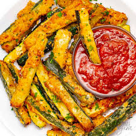

Crispy Baked Zucchini Fries

Ingredients:
- Cut two medium zucchinis into sticks, similar to fries.
- Half a cup of breadcrumbs (for added crispiness, use panko breadcrumbs)
- 1/4 cup of Parmesan cheese, grated
- One teaspoon of Italian spice (or dried oregano, basil, and thyme combined)
- half a teaspoon of powdered garlic
- To taste, add salt and pepper.
- two beaten eggs
- Olive oil or cooking spray
Instructions:
- Adjust the oven temperature to 425°F (220°C) and place parchment paper on a baking pan.
- Mix the breadcrumbs, grated Parmesan cheese, garlic powder, Italian seasoning, salt, and pepper in a shallow plate. Blend thoroughly.
- After dipping each zucchini stick into the beaten eggs and shaking off any excess, coat each one evenly by gently pushing it into the breadcrumb mixture.
- Make sure the coated zucchini sticks are not in contact with one another when you arrange them in a single layer on the baking sheet.
- Cooking spray or a light sprinkle of olive oil can be used to the zucchini fries.
- Bake the zucchini fries in the preheated oven for 20 to 25 minutes, rotating them halfway through, or until they are crispy and golden brown.
- When finished, take them out of the oven and allow them to cool a little before serving.
- Savor these crunchy baked zucchini fries with your preferred dipping sauce, such ranch dressing, marinara sauce, or garlic aioli!